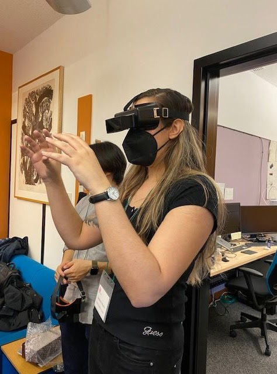
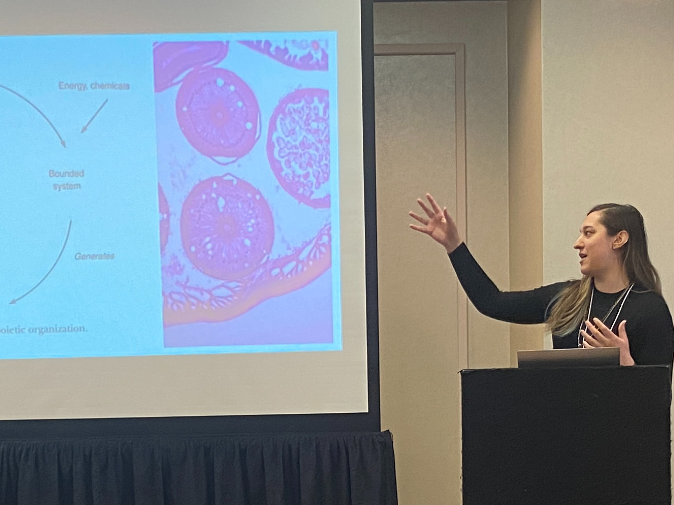

Research
My research focuses on philosophy of mind, cognitive science, and philosophy of science & biology, with the overarching aim of locating the mind in the natural world.
My main research project investigates the mind at its lower boundaries: I synthesize research concerning invertebrate sentience and primitive biological agency to develop a framework that unifies life, agency, and sentience. Alongside my core project, I investigate the metaphysics of consciousness vis-a-vis the metaphysics of science, as well as the relationship between the mind and biology.
Papers
Under Review email for draft
Sentience, the capacity for valenced mental states, has traditionally been thought to be restricted to sophisticated animals; but many philosophers and scientists have increasingly encouraged that a much broader range of animals be countenanced as sentient. In this paper I argue for biosentientism: the thesis that all organisms are sentient. Consideration of the neural mechanism underlying the microscopic worm Caenorhabditis elegans's (C. elegans) motivational trade-off decisions reveals that C. elegans exemplifies flexible behavioural control via top-down attention, a mechanism which I argue lies in between reflex and cognition. I develop a framework which allows us to make sense of this kind of flexible behaviour in the absence of cognition by understanding organisms as primitive agents responding to the affordances of their environments. I then deploy this framework to argue that C. elegans is sentient, and, further, to argue for biosentientism.
In Preparation
I argue that primordial valence as an evolutionarily ancient feature of animal life, which facilitates flexible decision-making in complex environments. According to the orthodox view, valence is a common currency in the sense that it is a commensurable measure that can be computed over to generate behaviour. But the orthodox view cannot overcome the problems of motivation and goal directedness, and hece fails as an analysis of primordial valence. In its place, I propose a Jamesian theory of valence as a loader of the dice. I work out how this alternative conception of valence furnishes us with an explanation of valence as inherently motivating and as constitive of purposive behaviour in pre-rational life.
Presentations * = refereed

Navigating while wearing prism goggles. Embodied Cognitive Science Unit, Okinawa Institute of Science and Technology, 2022.

Presenting at the Southern Society for Philosophy and Psychology, 2024.